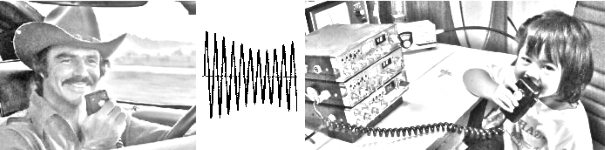
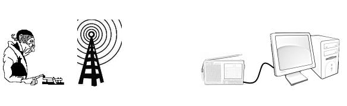

CB- und Amateurfunk
Was ist das?
Was ist eigentlich CB- und Amateurfunk? Obwohl beide was mit funken zu tun haben, gibt es hier aber doch große Unterschiede, die ich erstmal klarstellen möchte. CB-Funk steht für Citizen Band (= Bürgerband), also Jedermannfunk, man benötigt hier auch keine Lizenz im Gegensatz zum Funkamateur, der diese nach Ablegung einer umfrangreichen Prüfung bei der Bundesnetzagentur (früher Regulierungsbehörde für Telekommunikation und Post, kurz RegTP) erhält.
Unterschied zwischen Funkamateur und Amateurfunker?
Da es zwischen diesen beiden Begrifflichkeiten oft Verwirrung herrscht, möchte ich dies kurz klarstellen: Der Funkamateur ist lt. § 2 des Amateurfunkgesetzes Teilnehmer am Amateurfunkdienst, er ist auch Inhaber eines Amateurfunkzeugnisses und somit berechtigt Sendeanlagen mit hohen Leistungen zu betreiben sowie eigene Funkgeräte zu bauen. Unter einem Amateurfunker versteht man einen Laien auf funktechnischem Gebiet, darunter gehören auch die CB-Funker, die keine technischen bzw. betrieblichen Kenntnisse nachweisen müssen. Allerdings dürfen diese nur auf CB-Funk, PMR/LPD- oder Freenetfrequenzen mit kleinen Leistungen (< 10 Watt) untereinander kommunizieren.
Der CB-Funker
Der CB-Funker darf nur mit zugelassenen Geräten im 11m-Band (27 MHz) funken und das auch mit nur einer maximal zulässigen Sendeleistung von 4 Watt in FM (= Frequenzmodulation) oder 1 Watt in AM (= Amplituenmodulation), das Anschließen von Leistungsendstufen ist verboten und kann strafrechtlich geahndet werden! Im Gegensatz zum CB-Funker darf der Funkamateur, wie oben bereits erwähnt, seine Funkgeräte selber bauen und kommerzielle Geräte modifizieren und darf auf wesentlich mehr Bändern und mit viel höherer Leistung senden. Der Amateurfunk ist daher mehr als nur mit jemanden über Funk Kontakt aufzunehmen, sondern fordert vorallem auch zu technisch-wissenschaftlichen Experimenten auf, hier zusammengefasst in einem Zitat aus Wikipedia:
aus Wikipedia, http://de.wikipedia.org/wiki/AmateurfunkdienstDer Amateurfunkdienst (kurz: Amateurfunk, englisch: ham radio oder amateur radio) ist ein internationaler öffentlicher Funkdienst gemäß der Vollzugsordnung für den Funkdienst, der "von Funkamateuren untereinander, zu experimentellen und technisch-wissenschaftlichen Studien, zur eigenen Weiterbildung, zur Völkerverständigung und zur Unterstützung von Hilfsaktionen in Not- und Katastrophenfällen wahrgenommen wird."
Einblick in den Amateurfunkdienst
Wer sich noch gar nichts unter Amateurfunk vorstellen kann, dem empfehle ich das Fachmagazin "FUNKAMATEUR" für Amateurfunkt, Elektronik und Funktechnik. Es erscheint monatlich und ist am Kiosk erhältlich. Im Oktober 2012 feierte die Zeitschrift ihr 60. Jubiläum, nähere Informationen zur Geschichte kann man hier in diesem Artikel nachlesen.
Weitere Informationen zum Amateurfunkdienst findet der Interessierte auch auf den Seiten des DARC, Deutscher Amateur-Radio-Club e.V.
Einstieg über CB-Funk ("Jedermannfunk")
Viele Funkamateure sind über den CB-/PMR-Funk beim Amateurfunkdienst gelandet. Ich rate auch jedem Neuling mit dem CB-Funk anzufangen, da hier die Einstiegshürden und vor allem auch die Kosten wesentlich gerigner sind als beim Amateurfunk. Jedoch sollte man in einer Gegend wohnen, in der der CB-Funk noch aktiv ist, ansonsten wird man vermutlich enttäuscht sein nichts zu hören. Packet Radio ist auch mit CB-Funk möglich, so dass hier bereits Erfahrungen mit einer digitalen Betriebsart gesammelt werden können.

Einstieg als "Hörer": CW auf 20m mit einem Degen DE1103
Selbst wenn man noch kein Inhaber eines Amateurfunkzeugnisses ist, der kann in den Funkverkehr hineinhorchen, hier genügt schon ein günstiger Reise-Kurzwellenempfänger aus. Ein aufgenommenes CW QSO (CW = Continuous Wave, Betriebsart für Morsetelegrafie, QSO = zweiseitige Funkverbindung ) vom 19.2.2012 von der Station LZ5R aus Bulgarien. Der KW-Empfänger mit SSB ist ein DE1103 vom Hersteller Degen. Zur Anwendung kam die mitgelieferte Teleskopantenne. Wenn man den Empfänger noch an die Soundkarte des PCs anschließt kann man mit entsprechender Software das Morsesignal automatisch dekodieren lassen, im folgenden Video kann man gut sehen wie die Station LZ5R per CQ (= allg. Anruf im Funkverkehr) versucht einen QSO zu starten.
CB-Gateway: das Internet als "virtuelle Funkstrecke"
Bei einem CB-Gateway werden herkömmliche CB-Funkstationen über das Internet vernetzt. Das Internet dient hier als virtuelle Funkstrecke, so dass weltweit Sprache übertragen werden kann. Die Technik dahinter ist relativ simpel. Das Funkgerät von Station A empfängt die Sprache, diese wird über den Lautsprecher-Ausgang des Funkgeräts an den Eingang (LINE-IN) der Soundkarte verbunden und im Computer mithilfe einer Software digitalisiert und dann schließlich über das Internet übertragen. Am entfernten Standort B wird das digitalisierte Signal wieder über den Ausgang (LINE-OUT) der Soundkarte des Computers an das Funkgerät über den Mikrofoneingang übertragen.
CB-Funkgeräte als Funkmodem verwenden
Im folgenden Video habe ich Morse-Signale (CW) (hier wären natürlich alle Arten von digitalen Signalen möglich), die vom Notebook generiert werden, über ein angeschlossene CB-Stationsgerät an meinen PC gesendet, dessen Mikrofoneingang mit einem CB-Handfunkgerät verbunden ist. Auch hier erfolgt die Decodierung der Signale mit der gleichen Software. In diesem Fall befanden sich beide Stationen an einem Standort, eine Übertragung über das Internet wäre mittels VoIP-Software (z.B. Teamspeak) ohne Weiteres möglich.